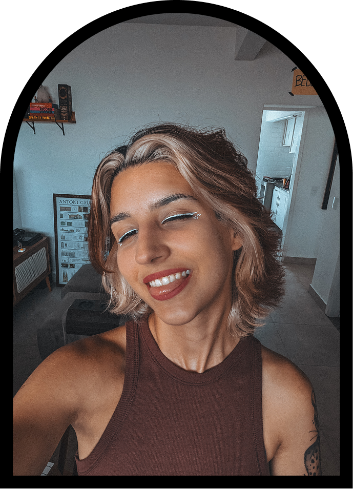
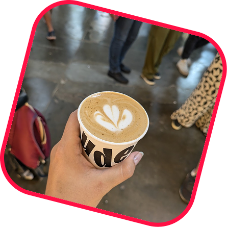
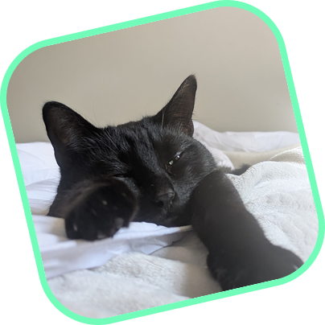

Hi there! You can call me Vivis.
I'm a mid-weight 2D Motion Designer with over 5 years of experience creating animated content for brands, companies, digital products, and journalism. My strength lies in turning complex ideas into clear, engaging visual stories - whether it's explaining a fintech feature, illustrating a data investigation, or crafting content for social media.
I thrive in cross-functional teams - collaborating with product designers, UX writers, video editors, producers and marketers. I adapt quickly to different visual styles, brand voices and fast-paced environments. I'm passionate about purposeful storytelling through motion, always looking for new ways to combine creativity with strategy.
When I'm not designing, you can find me enjoying music festivals, drinking too much coffee, watching good movies, getting lost in a fantasy book or petting my cat.


